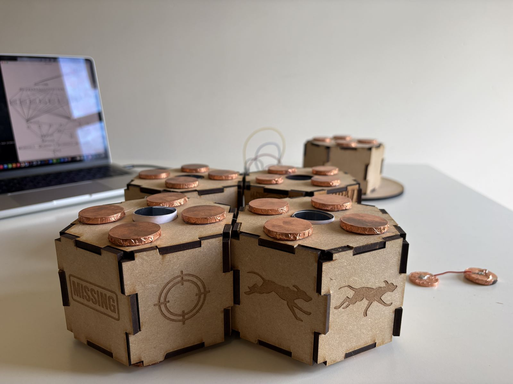
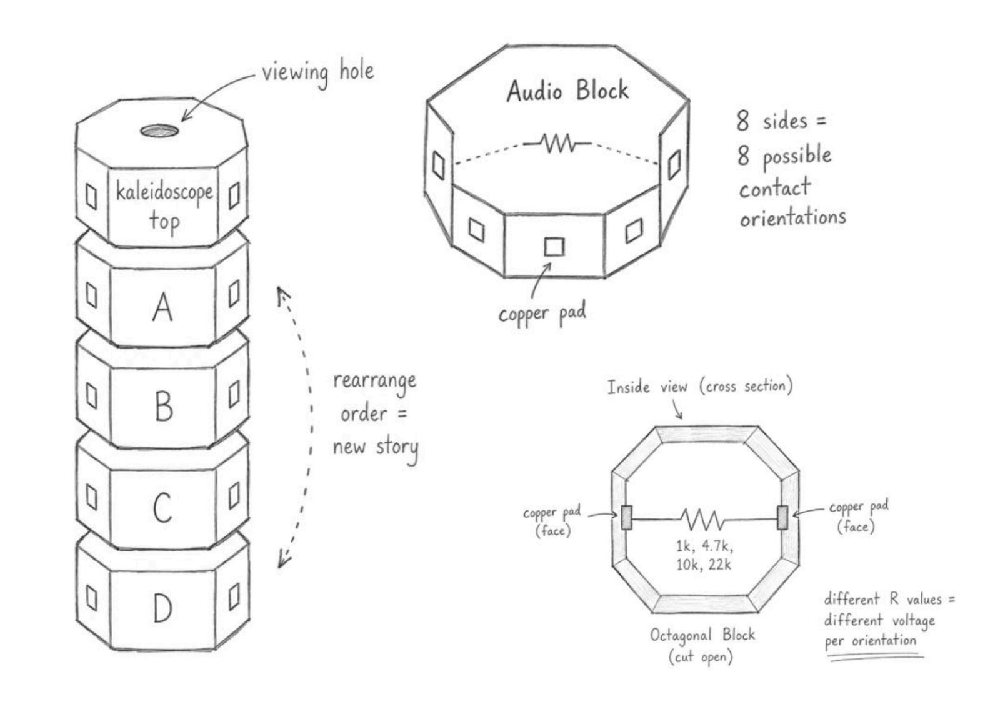
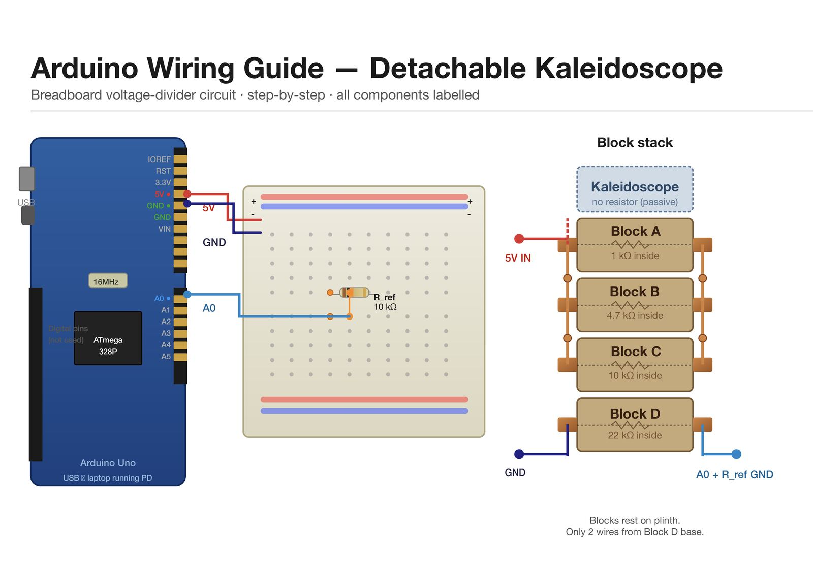
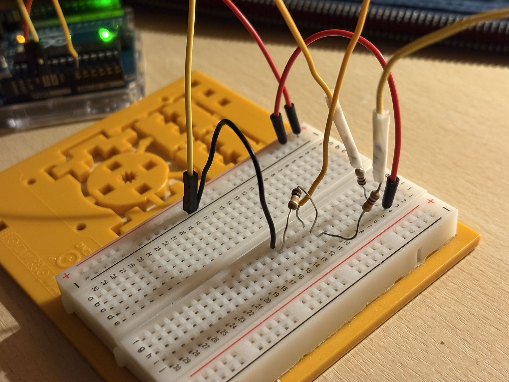
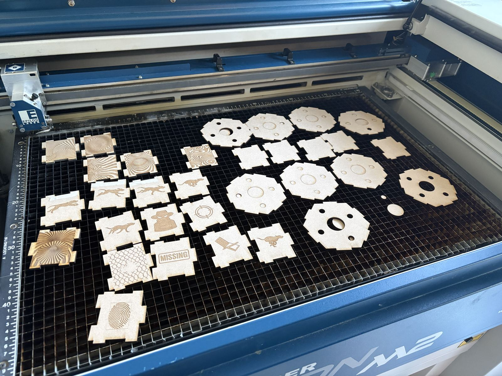
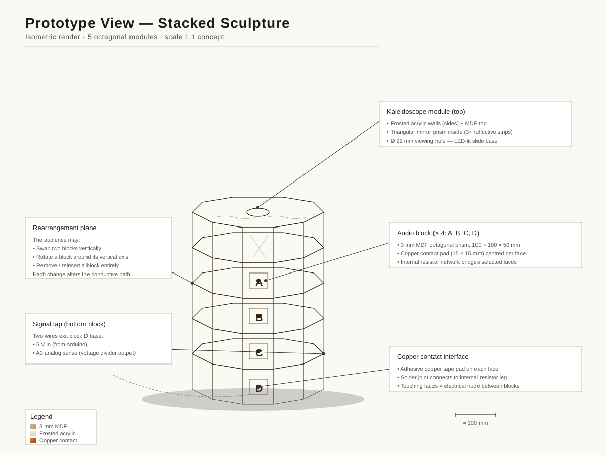

Watch the sculpture in action — rearranging the blocks changes the audio narrative sequence in real time.

The four hexagonal blocks disassembled — copper contact pads on each face, laser engraved narrative imagery (Missing poster, target, running dog) and the resistor network inside each block.
What if the truth of a story depended not on what was said, but on the order in which you heard it?
The Detachable Kaleidoscope is a modular interactive sculpture that makes that question physical. Four hexagonal MDF blocks, each carrying a fragment of the same police interview dialogue, can be rearranged by anyone who approaches the sculpture. Every new arrangement triggers a different sequence of audio (the same words, the same characters, but a completely different interpretation of what happened).
The concept grew out of observations about how social media platforms like TikTok or Instagram Reels present information. These platforms don't typically change the facts of a story, they fragment and resequence them. Audiences form conclusions from clips, headlines and out of context excerpts. The sculpture makes that mechanism visible and tangible.
The dialogue between the two characters in the police interview never changes. The words are the same in every configuration. But the emotional reading shifts dramatically depending on sequence. A statement that sounds suspicious in one order becomes exculpatory in another. Audiences become aware, through direct physical experience of how structure creates meaning.
Early sketches explored the modular block system labelled A, B, C, D each containing a resistor between copper contact faces, topped by a kaleidoscope viewing piece. The 6-sided form gave 6 possible contact orientations per block, creating a rich enough combinatorial space to map onto distinct audio sequences without needing complex electronics.

Early ideation sketches (modular block structure, audio block system and cross section showing resistor placement between copper pads (1kΩ, 4.7kΩ, 10kΩ, 22kΩ)).
The sculpture functions through analogue electronics, Arduino sensing and audio sequencing in Pure Data. Each block contains different resistor values which when stacked, the blocks form a resistor network whose total resistance changes with arrangement. Arduino reads the voltage and sends values to Pure Data, which maps resistance ranges to audio sequences.
Signal flow — how a physical block rearrangement becomes an audio narrative:

Arduino Wiring Guide — breadboard voltage-divider circuit showing Block A (1kΩ), B (4.7kΩ), C (10kΩ), D (22kΩ) connected in series. A0 pin reads the voltage across the R_ref resistor.


Left: Arduino breadboard prototyping with resistor network testing. Right: Epilog laser cutter bed showing MDF hexagonal block pieces, panel faces and top/bottom caps.

Prototype isometric render of the modular sculpture — showing block stack assembly and kaleidoscope top unit.
The narrative was a deliberate design choice as much as the electronics were. A fictional police interview about a missing dog, the absence of dramatic content was intentional: it forces the audience to construct meaning from structure alone, not from the emotional charge of the subject matter.
Each of the four blocks carries one short audio fragment recorded in a natural conversational tone. The interaction is intentionally simple: approach the sculpture, rearrange the blocks, listen. As Ascott argued, interactive art replaces the passive spectator with an active participant — the audience member becomes the author of the narrative sequence they experience.
This project was my first sustained experience working at the intersection of physical computing, sound design and conceptual interaction design. The most important realisation was the relationship between physical interaction and conceptual meaning — the sculpture's concept only works because the audience physically creates the structure. Reading about that idea is one thing. Being the person who rearranges the blocks and hears the story change is another.